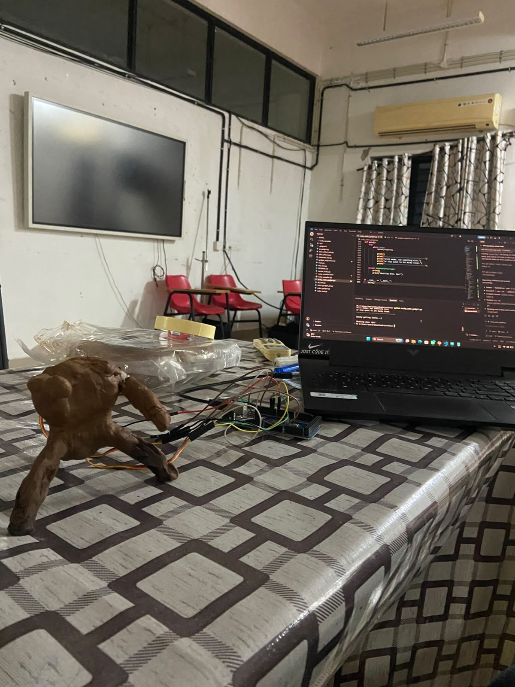

6 PM to 7 AM, one overnight sprint. Not a changelog — this is what actually happened, in the order it happened.
6:00 PM
Saying hello to an Arduino, sort of
main.py is eleven lines long and does exactly one thing: asks Gemini to say hello to an Arduino Mega in one sentence, then prints it. No Arduino was actually connected yet. This was purely "does my API key work" energy.
7:00 – 9:00 PM
Writing a personality before writing a feature
Before any hardware, before any voice, before anything worked — there was a system prompt. character_test.py was the first attempt: an "energetic extraterrestrial hardware companion," short sentences, no assistant-speak, reacts to danger/success/boredom with scripted one-liners.
It got rewritten at least three separate times across the project (ai_gadget.py, voice_gadget.py, voice_gadget_ptt.py each have their own slightly different version). Every rewrite chased the same problem: the model kept drifting back into helpful-assistant phrasing the moment a question got technical.
"Never say: 'As an AI...' 'Certainly!' 'Of course!' 'I would be happy to help.'" — literally copy-pasted into every version of the prompt, because it kept needing to be said again.
9:00 – 10:00 PM
First voice, and it was deeply unsettling
tts_test.py asked Gemini's TTS for something "calm, deep, slightly strange, mysterious, unsettling" and had it say "Hello human. I am awake. Your world is... interesting." It worked on the first try, which was almost worse — a genuinely creepy alien voice coming out of a laptop speaker at 1am is not what you want when you're alone in a room testing code.
10:00 PM – 12:00 AM
The voice was too much, in every direction
The plan was a robotic, synthetic-sounding alien voice — voice_gadget.py and ai_gadget.py both ask specifically for "slightly synthetic," "slightly rough," "metallic" delivery. In practice: too high-pitched, too fast, too loud, and honestly just annoying to listen to for more than one exchange.
The eventual fix in rocky_wake_gadget.py was almost embarrassingly low-tech: play the generated audio back at a lower sample rate than it was recorded at. Slower playback rate = slower and deeper, like a cassette tape played at the wrong speed. A PLAYBACK_SPEED constant and a volume multiplier fixed what felt like it needed real DSP work.
12:00 – 1:00 AM
The alien-effect rabbit hole
alien_effect_test.py exists because "what if instead of fixing the voice, we lean harder into making it sound like a robot alien." It runs the TTS output through tanh soft-clip distortion, ring modulation at 45Hz, and a highpass filter for metallic high-end. It sounds exactly like what it is — genuinely fun to listen to once, not something you want narrating a conversation. Kept the script, didn't ship the effect.
1:00 – 2:00 AM
Teaching a microphone what "Hey Rocky" sounds like
mic_test.py confirmed the microphone and Google's speech recognition worked at all. Then record_rocky.py went further: a guided recording session, 10 takes of "Hey Rocky," 10 takes of normal unrelated speech, sorted into positive/ and negative/ folders — the raw material for a custom wake word.
wake_test.py tested the wake-word pipeline itself, but with openWakeWord's stock hey_jarvis model rather than a custom-trained one — proving the mechanism before trusting it with a homemade dataset of ten claps of "Hey Rocky."
2:00 – 3:00 AM
The wake word never quite made it to launch day
Open up rocky_wake_gadget.py and the wake-word detection logic is still in there — just commented out. awake = True # wake word disabled for now, starts awake. Ten recordings of "Hey Rocky" was not, it turns out, a dataset. For a demo where reliability in front of an audience mattered more than the coolness of a wake word, "just start awake" won. voice_gadget_ptt.py — a push-to-talk fallback — was the safety net built in parallel, in case even that wasn't reliable enough.
3:00 – 4:00 AM
Giving Rocky a body
Two servos, wired as "hands," controlled over serial from Python with a two-byte protocol: 'T' to start a talking wiggle, 'S' to stop and return to rest. The Arduino side does the wiggling itself — random-ish angles between 70° and 110°, timed with millis() instead of delay(), so it never blocks the loop from reading the next serial command.
4:00 – 5:00 AM
Two features nobody asked for
This is where "useless" stopped being self-deprecation and became the actual design brief. Feature one: Rocky invents a fake Eridian word and its meaning on request, remembers it in a small JSON file, and quizzes you on it — unprompted — the next time you talk to him. Feature two: a homesickness meter. Ignore him past a growing threshold and he starts complaining, unprompted, escalating from "Rocky bored" to "Rocky very lonely. Very very." Neither feature does anything for you. Both make the gadget feel like it's actually there.
5:00 – 6:00 AM
Giving the loneliness meter something to fix it
A capacitive touch sensor went on next, wired to the Arduino, sending a byte back to Python for the first time — everything up to this point was one-directional. One touch resets the homesick timer and triggers a quick happy-perk animation. Debounced with a timestamp check so one touch doesn't fire fifteen times.
6:00 – 7:00 AM
A window into what Rocky's saying
The last piece was a small local WebSocket server bolted onto the main script — running in a background thread so it doesn't interfere with the blocking speech-recognition/TTS loop — broadcasting three events: talk started, talk stopped, and the actual response text. A standalone page connects to it and shows a live "sonar readout": an animated waveform synced to whether Rocky is currently talking, and his actual words typed out live underneath, styled like his own onboard translator panel.
